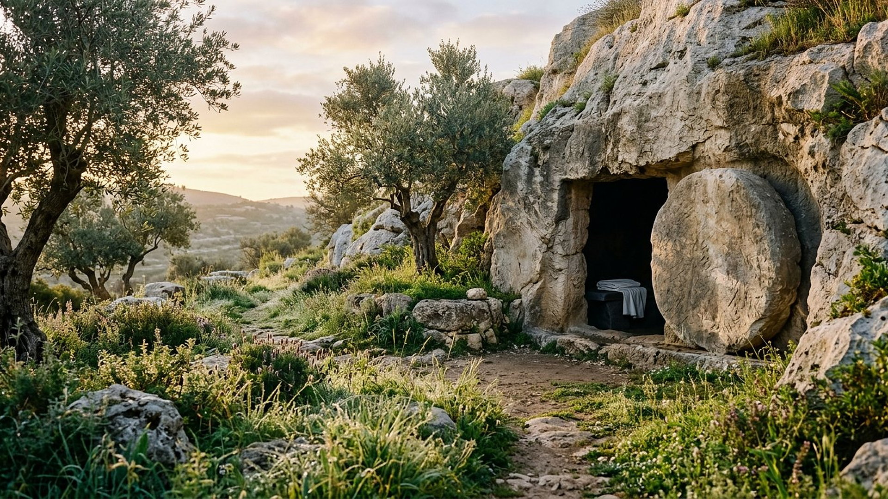
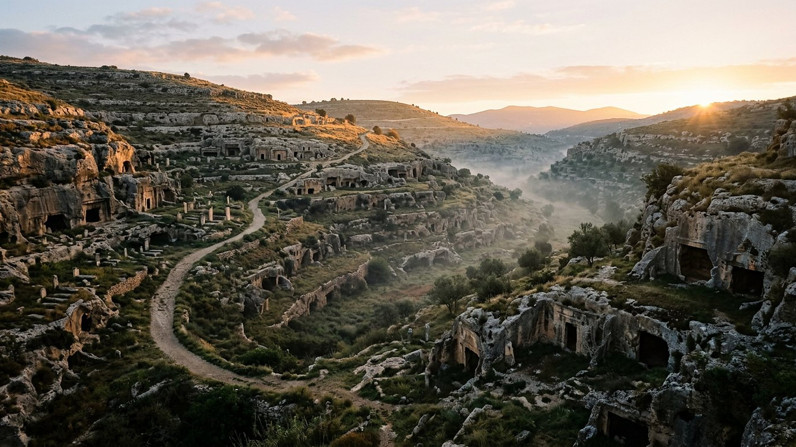
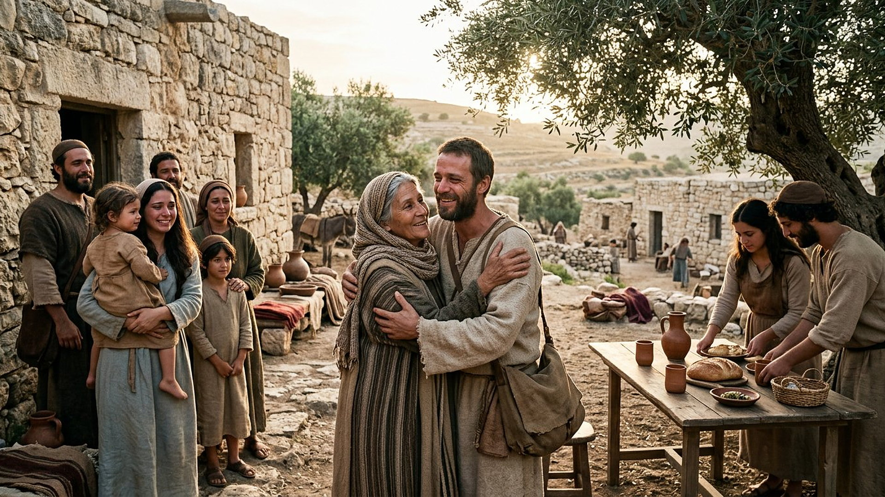

Salle 39 — Jean 5 ; Actes 24 ; 1 Corinthiens 15 À VENIR
La résurrection : les morts relevés
« L’heure vient où tous ceux qui sont dans les tombeaux entendront sa voix et en sortiront. » — Jean 5:28-29 (d’après Segond 1910, adapté)
Reconstitution numérique — la Pierre écartée au matin : l’image que la Bible donne du tombeau Un tombeau ouvert — sans figurer personne.
La promesse qui traverse le deuil
De toutes les annonces du musée, celle-ci touche le plus directement la douleur humaine : les morts ne sont pas perdus pour toujours. Jésus l’affirme devant ses adversaires : « l’heure vient où tous ceux qui sont dans les tombeaux entendront sa voix et en sortiront : ceux qui auront fait le bien ressusciteront pour la vie, mais ceux qui auront fait le mal ressusciteront pour le jugement » (Jean 5:28-29). Paul, prisonnier, en fait sa confession publique : « il y aura une résurrection des justes et des injustes » (Actes 24:15).
Dans la lecture retenue par ce musée, cette résurrection est terrestre et progressive : pendant le règne de mille ans (salle 32), l’humanité relevée — y compris des milliards de personnes qui n’ont jamais pu connaître Dieu — est éduquée et mise à l’épreuve en connaissance de cause, avant le jugement du grand trône blanc (salle 33). Les morts sont décrits comme endormis et inconscients en attendant ce réveil (Ecclésiaste 9:5), non comme vivant déjà ailleurs. Aucune date n’est avancée : ni le commencement des mille ans, ni l’ordre de retour de tel ou tel être cher.
Le récit en cinq temps
Avancez dans la promesse, d’une station à l’autre.

Le banc des preuves : un texte très tôt recopié
FAIT ARCHÉOLOGIQUE
Le chapitre 15 dans le Papyrus 46 (EV-48)
Le Papyrus 46 (𝔓⁴⁶, vers 175-225 — déjà rencontré en salle 38) transmet presque entièrement 1 Corinthiens, dont le chapitre 15, le grand texte de la résurrection : « Christ est ressuscité des morts, il est les prémices de ceux qui sont morts » (15:20). Le chapitre circulait donc, recopié dans un recueil des lettres de Paul, environ un siècle et demi après sa rédaction (vers 55 de n. è.).
DONNÉE HISTORIQUE
Une formule « reçue et transmise »
Paul ouvre son argumentation en rappelant une formule qu’il dit avoir lui-même reçue : « Christ est mort pour nos péchés, selon les Écritures ; il a été enseveli, et il est ressuscité le troisième jour, selon les Écritures ; et il est apparu à Céphas, puis aux douze » (15:3-5). De nombreux historiens datent cette confession des toutes premières années du mouvement chrétien ; sa datation exacte reste discutée (voir EV-48, statut débattu).
DÉBATTU
Ce que deviennent les morts : les désaccords
La majorité des traditions chrétiennes enseigne que l’âme, immortelle, survit à la mort et reçoit aussitôt son sort ; la résurrection devient alors réunion de l’âme et du corps au dernier jour. D’autres lectures — dont celle retenue ici — comprennent les morts comme inconscients (« les morts ne savent rien », Ecclésiaste 9:5) et la résurrection comme un véritable retour à la vie sur la terre. Le musée expose son choix et signale le débat, sans caricaturer l’autre lecture.
Quatre clés pour bien entendre la promesse
1. Une résurrection de jugement, pas un passe-droit
Les « injustes » relevés ne reviennent ni condamnés d’avance ni sauvés d’office : ils sont éduqués pendant les mille ans, puis jugés « selon leurs œuvres » en pleine connaissance (salle 33). La résurrection ouvre une chance réelle, pas un verdict déjà prononcé.
2. Un ordre, pas un calendrier
« Chacun selon son rang » (1 Corinthiens 15:23) : d’abord le Christ, puis les siens, puis l’humanité relevée au long des mille ans. L’ordre est décrit ; l’heure de chaque retour ne l’est pas. Aucune date ne peut être tirée de cette salle pour qui que ce soit.
3. Des retrouvailles terrestres
Les récits de résurrections anciennes montrent des scènes simples : Lazare ressort du tombeau, la fille de Jaïrus se lève, le fils de la veuve de Naïn est rendu à sa mère (Jean 11 ; Luc 7 et 8). La promesse généralisée garde cette échelle humaine : des familles qui se retrouvent, des tables qui se redressent.
4. La mort elle-même doit disparaître
La résurrection n’est pas le terme : « le dernier ennemi qui sera détruit, c’est la mort » (1 Corinthiens 15:26). Après le jugement, « la mort ne sera plus » (Révélation 21:4) — c’est la vallée de la salle 34, la nouvelle Jérusalem, qui attend au bout du parcours.
Prescience n’est pas fatalité — un réveil offert, pas imposé
Être relevé n’est pas être sauvé d’office : les ressuscités des mille ans auront à apprendre, choisir et répondre — comme les vivants d’aujourd’hui. La prescience qui annonce leur retour ne décide pas à leur place ; elle garantit seulement que la mort n’aura pas le dernier mot sur la possibilité de choisir.

Salle 32 : le règne de mille ans · Salle 33 : le grand trône blanc · Salle 24 : la vallée des ossements
Écouter la salle
Transcription de la narration
Bienvenue dans cette salle du musée. Vous allez découvrir un jardin de pierres au lever du soleil, une vallée d’anciennes tombes dans la brume du matin, puis une cour de village où une famille se retrouve autour d’une table. Bonne visite. La visite avance en cinq étapes courtes. Prenez le temps d’observer chaque image et de lire les panneaux : ils présentent des textes anciens, un très vieux manuscrit conservé entre Dublin et le Michigan, et les questions que les spécialistes débattent encore.